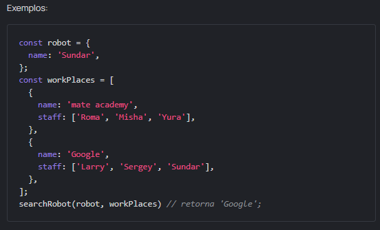

Tarefa: Save and rescue
Intro
Os técnicos relataram que a robô Polly enviou um sinal de alarme para o nosso painel de controle; seus sistemas falharam. Ajude a encontrar um robô usando a função searchRobot. Ela aceita o objeto robot e o array workPlaces com todos os locais onde sabemos que o robô pode estar. O resultado da missão de busca e resgate deve ser o nome do local onde o robô está no momento.
